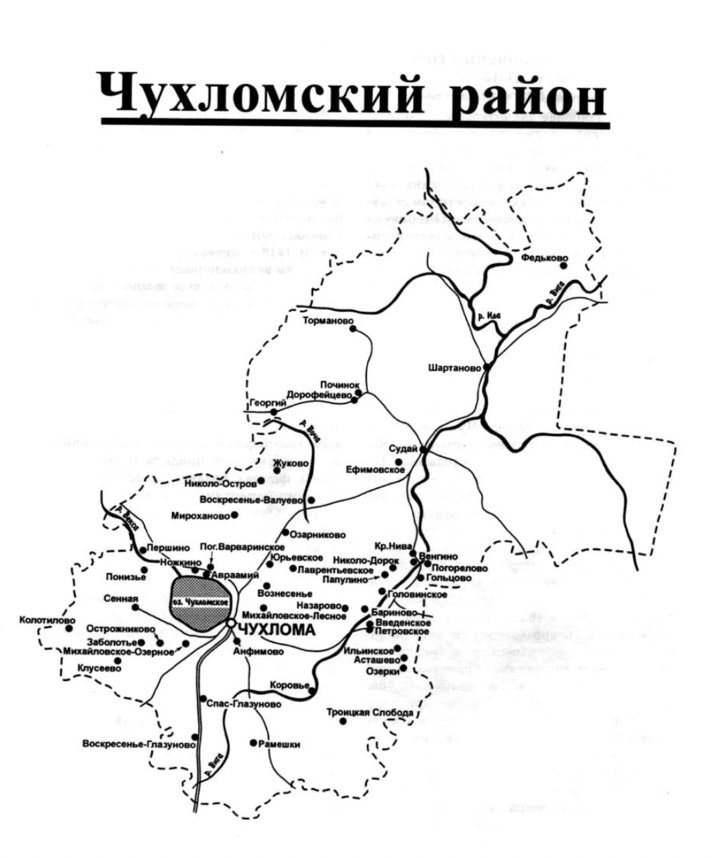

История
Святое болото, расположенное в Чухломском районе Костромской области, является уникальным природным заказником, известным своей древней историей и значимостью как экологического, так и культурного наследия. Святое болото тесно связано с Чухломским озером и является истоком реки Святицы, которая питает озеро, поддерживая уникальную гидрологическую систему региона. Святица — река, питаемая родниками, которые славяне называли «святиками». От них и болото, и река получили своё название. Но это не единственная достопримечательность Чухломского района.

На карте XIX века на территории Чухломского, Галичского и Солигаличского округа, как и на всей территории Костромского уезда, находилось большое количество храмов. Костромская губерния славилась не только как уникальный природный заказник, но и уникальной архитектурой, памятниками архитектуры, многие из которых оказались под угрозой исчезновения.
Новгородские славяне называли все финские племена, с которыми воевали, общим названием «чудь». Достоверно известно, что новгородцы завоевали и заселили Чухломский край. Этот процесс начался в IX веке, когда из исторических источников исчезло упоминание племени «меря» и вместо него появилось название «чудь». Это свидетельствует о том, что чудь, населявшая Чухломский край, не представляла собой отдельного племени, а была теми же мерьянами. От этого народа в регионе сохранились многочисленные географические названия нерусского происхождения: Чухлома, Ножега, Нельша, Точема, Подонгжа, Печерда, Молокша, Мелша, Возега, Едомша, Сундоба, Вохтома, Руша, Шендай, Судай (Чудай), Мерега, Мерля. Славянская колонизация Чухломского края, как упоминалось ранее, началась в IX веке. Основной поток переселенцев шел из Великого Новгорода, чему способствовали его военные цели и активная торговля. Заселение продолжалось несколько веков и имело огромное влияние на развитие региона. В итоге финское население было частично вытеснено, а частично ассимилировано славянами, утратив свою этническую самобытность. Новгородская колонизация продолжалась и в X веке. В жизнеописании Авраамия, строителя Ростовского монастыря и уроженца Чухломы, говорится, что в то время он был идолопоклонником, но принял христианство благодаря торговцам из Новгорода. Существует предположение, что акающий говор жителей Чухломы был заимствован от новгородцев, как и традиция строительства бань. В XIV веке началась монастырская колонизация. Одним из ее инициаторов стал Авраамий Чухломский, основавший три монастыря: Великую пустынь (сегодня село Озерки), Верхнюю пустынь (ныне село Коровье) и Авраамиевский Городецкий монастырь на берегу Чухломского озера. До этого времени население края было немногочисленным, многие оставались язычниками, а принявшие христианство все еще сохраняли веру в прежних богов. Основание монастырей привело к притоку населения и появлению новых деревень. История Чухломского края тесно связана с Галичским княжеством и городом Галичем. Еще во времена племени меря главным городом региона был Галич. В 1245 году было образовано Галичское удельное княжество, в состав которого вошла Чухлома, разделяя его судьбу и участвуя во всех военных кампаниях. До середины XIV века Чухломский край принадлежал Галичскому князю Константину Ярославовичу, брату Александра Невского. Позже власть перешла к его сыновьям — Давиду и Василию, а затем к его внуку Федору. В 1328–1340 годах княжество было приобретено Великим князем Иваном Калитой. По преданию, именно он основал два села Чухломского края — Николо-Каликино и Введенье-Каликино, названия которых восходят к прежнему названию «Калитино». После Калиты княжество унаследовал его племянник Дмитрий Донской, передавший его своему сыну Юрию. Последним правителем Галича был Дмитрий Юрьевич Шемяка, оставивший после себя дурную славу из-за жестокости, коварства и несправедливых судов, известных как «шемякин суд». Он вел междоусобные войны с московским князем Василием Темным, погубив множество людей. В 1450 году, после включения Галичского княжества в состав Московского государства, Чухломский край, как и другие уезды княжества, оказался под управлением московских бояр, которые осуществляли суд и правление. В Москве был создан особый приказ «Галичской четверти», которому подчинялась и Чухлома. В XV–XVI веках Чухломский край неоднократно подвергался нападениям казанских татар. С 1485 по 1565 год они совершили 15 набегов, разоряя деревни, убивая и уводя жителей в плен. Именно эти набеги стали причиной появления множества пустошей в регионе. По данным Чухломской уездной земской управы, таких заброшенных территорий насчитывалось 824. Вот перефразированный текст: